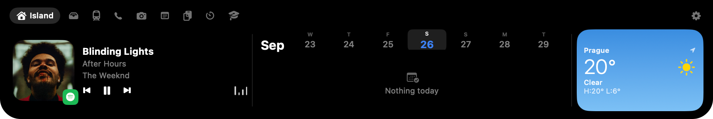
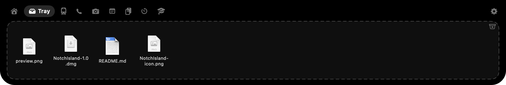
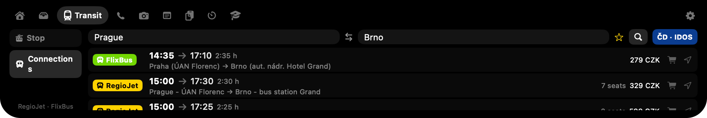
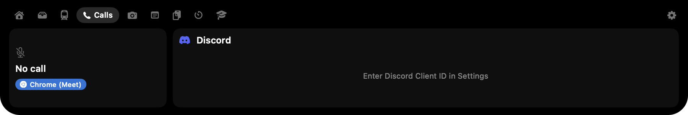
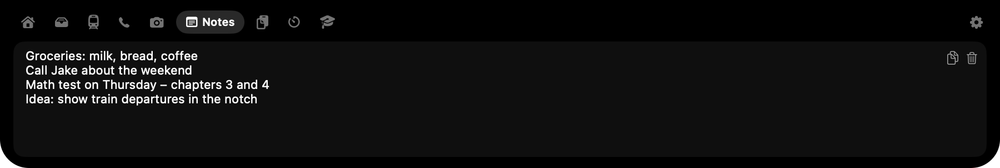
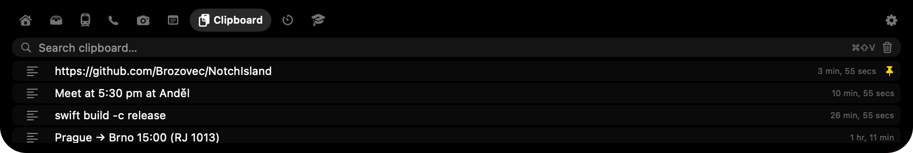

Your MacBook notch, finally useful.
NotchIsland turns the camera cutout into a Dynamic Island. Hover to expand: music, files, live transit, your timetable, screenshots, clipboard, a timer and the weather.
Free · Open source (MIT) · macOS 14+ · Apple Silicon & Intel · Czech, English, German, Slovak, Polish
See it in action
Real screenshots of the app. Hover the notch (or tap it), then switch tabs.






Every frame above is a real capture. Only the sample data was staged.
Everything one hover away
Nine modules. Turn off the ones you don't need.
Now Playing
Artwork, title, controls and an equalizer for Spotify, Apple Music and anything in a browser. While music plays, small wings appear beside the camera.
File tray
Drop files onto the notch to park them, drag them out anywhere later.
Live transit
Prague (PID) departures with delays and vehicle tracking, plus a RegioJet / FlixBus search with prices, seats and live delay.
School timetable
Bakaláři timetable with rooms, substitutions and cancellations. Break countdown in the notch and a notification when a break starts.
Screenshots
⌘⇧2 area, ⌘⇧1 screen, ⌘⇧O text recognition (OCR). Copied instantly; editor with arrows, blur and counters.
Clipboard history
⌘⇧V shows the last 10 things you copied. Click pastes straight into the active app.
Timer & Pomodoro
Countdown beside the camera, click to pause. Pomodoro 25/5 with long breaks.
Calls
Knows when Discord, Zoom, Teams or FaceTime use your mic. See who is in your Discord voice channel and mute from the notch.
Weather & calendar
Apple-Weather-style tile for your location and a calendar strip you scrub through by dragging.
Install in a minute
NotchIsland.app → Open. macOS shows a warning because the app is not notarized; this happens only once.FAQ
Is it free?
Yes, free and open source under the MIT license.
Which Macs are supported?
macOS 14 Sonoma or newer. The full effect needs a MacBook with a notch (Pro 2021+, Air 2022+); other Macs get a small island below the top edge.
"NotchIsland can't be opened because Apple cannot check it for malicious software"
Right-click the app → Open, or System Settings → Privacy & Security → Open Anyway. Once.
Does it see YouTube in the browser?
Yes. It reads the same Now Playing info macOS shows in Control Center, so Chrome, Safari, podcasts and every music app show up.
Screenshots come out black or the shortcut does nothing
Allow NotchIsland under System Settings → Privacy & Security → Screen Recording. If you run Shottr at the same time, it grabs the same shortcuts; quit it or change its keys.
Does it send my data anywhere?
No accounts, no servers. Requests go only to the public services you use: transit data, Open-Meteo weather, your school's Bakaláři server.
Can I hide modules I don't use?
Yes, Settings → Modules. Click a module to hide or show its tab.